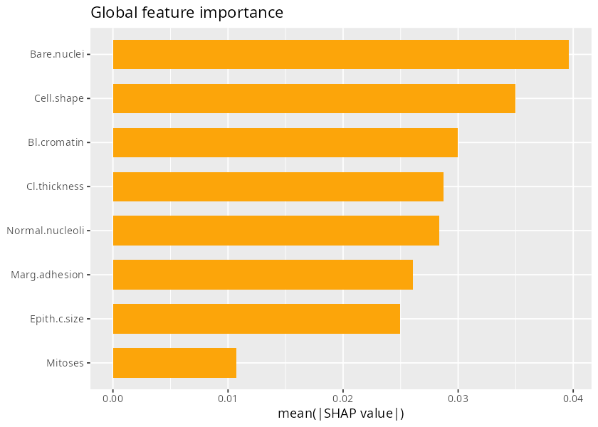
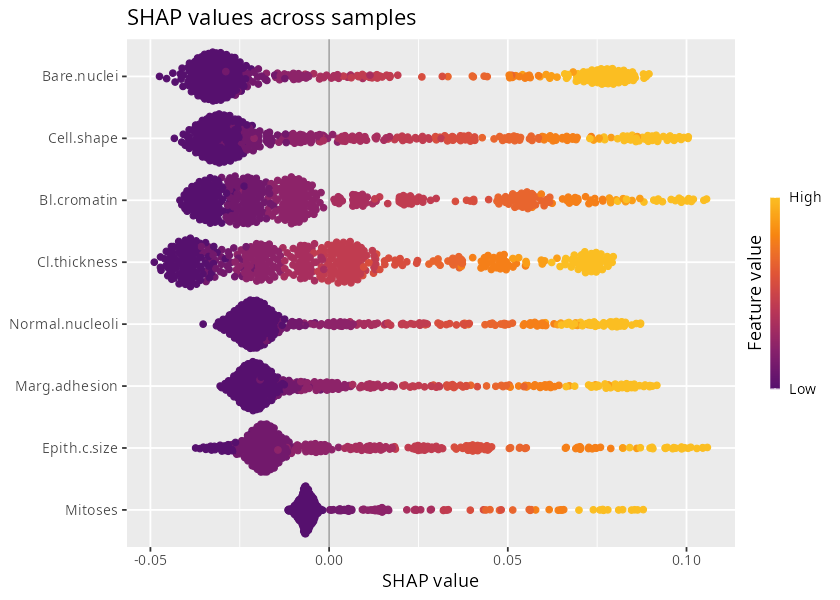
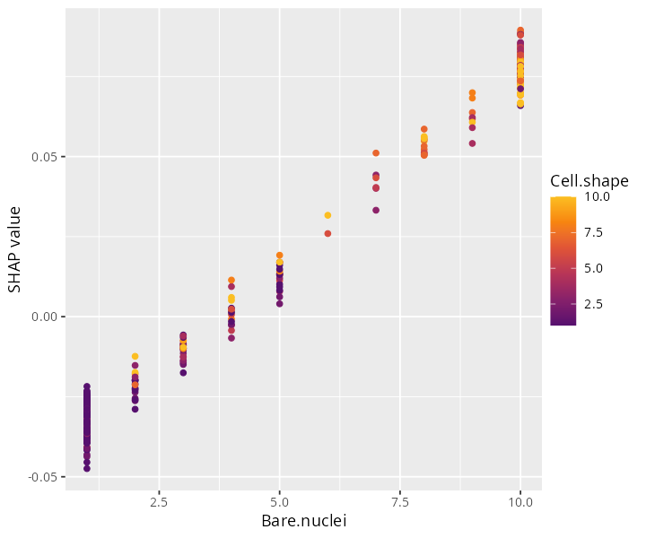
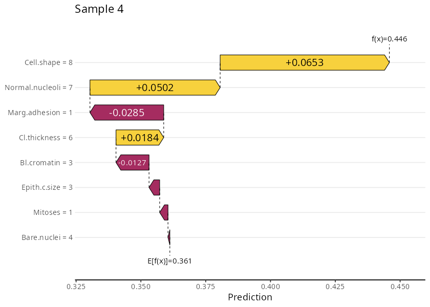
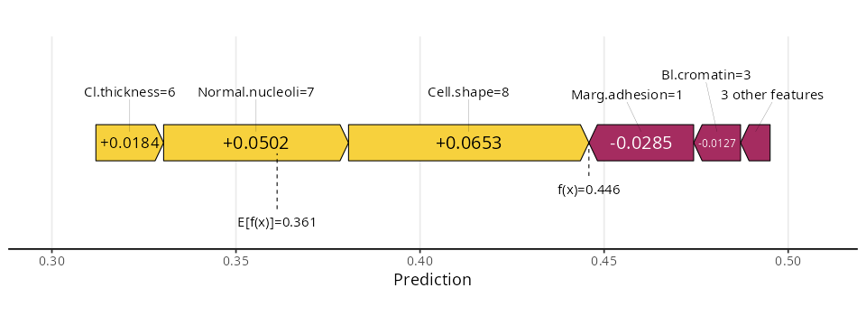
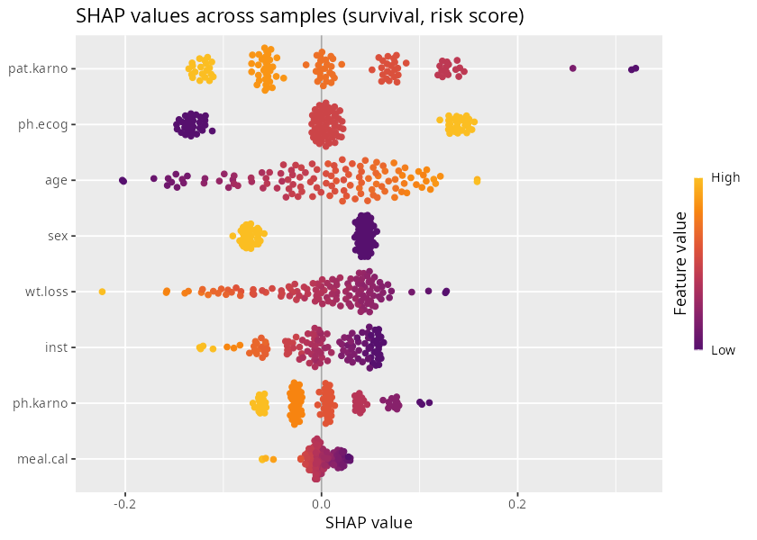

Interpreting models with SHAP values
a3_shap.Rmd
library(pipeML)
library(dplyr)
#>
#> Attaching package: 'dplyr'
#> The following objects are masked from 'package:stats':
#>
#> filter, lag
#> The following objects are masked from 'package:base':
#>
#> intersect, setdiff, setequal, unionWhat are SHAP values?
SHAP (SHapley Additive exPlanations) values quantify how much each feature pushed a prediction away from the average prediction. They come from cooperative game theory: each feature is a “player”, and its SHAP value is its fair share of the prediction. For one sample:
prediction(sample) = average prediction + SHAP(feature_1) + SHAP(feature_2) + ... + SHAP(feature_p)A positive SHAP value means the feature pushed the prediction above average, a negative value below. SHAP values are in the units of the model output:
- Classification: probability of the positive class. A SHAP value of 0.05 means the feature raised the predicted probability by 5 percentage points.
- Survival: risk score. Positive values push towards a higher risk.
pipeML estimates SHAP values with the
fastshap package, by Monte Carlo sampling (100 simulations
per feature): for each sample and feature, it measures how much
including the feature changes the prediction, on average across random
orderings of the features. An “absent” feature takes the value of a
randomly drawn training sample.
Which model is explained?
compute_shap_values() explains the final
model: the model selected by cross-validation and trained on
all training samples with the tuned hyperparameters, i.e. the model used
by compute_prediction(). SHAP values are computed for every
training sample, and the training samples are also the background data.
Everything is taken from the trained model, so it is the only input.
Because the final model is a single model, each feature has one definition for all samples. This matters for custom fold functions: the features they build (e.g. clusters or modules) can differ between cross-validation folds, but the final model uses the features computed once on all training samples.
Interpretation. The final model explains the samples it was trained on, so SHAP values describe how the model uses each feature on its training data. The cross-validation performance and the tuned hyperparameters are not affected, as they come from the folds. However, a model that overfits (e.g. a flexible model on a small dataset) can rely on features that fit the training samples without improving predictions on new samples, and SHAP values will show them as important. Compare the performance of the final model on the training samples with the cross-validation performance: if both are similar, SHAP values reflect features that generalize.
Computing SHAP values
We train a classification model on
data_example_classification (see the
Classification tutorial):
data <- pipeML::data_example_classification
X <- data %>% dplyr::select(-target)
y <- data$target
set.seed(123)
train_idx <- caret::createDataPartition(y, p = 0.7, list = FALSE)
res <- compute_features.training.ML(features_train = X[train_idx, ],
target_var = y[train_idx],
task_type = "classification",
trait.positive = "1",
k_folds = 5,
n_rep = 2,
ncores = 2)
shap <- compute_shap_values(model_trained = res$Model,
task_type = "classification",
seed = 123)The result has one row per training sample and one column per feature of the final model:
head(shap)SHAP values are Monte Carlo estimates: the same seed
gives the same values.
The average prediction of the model on the training samples is stored
in the attribute baseline. For each sample, the baseline
plus the sum of its SHAP values equals its predicted probability:
Feature importance across samples
The global importance of a feature is its mean absolute SHAP value across samples:
The shapviz package provides standard SHAP plots. It
needs the SHAP values, the feature values of the same samples (the
training data stored in the model) and the baseline:
X_shap <- res$Model$trainingData[rownames(shap), colnames(shap)]
sv <- shapviz::shapviz(as.matrix(shap), X = X_shap, baseline = attr(shap, "baseline"))Global feature importance:
shapviz::sv_importance(sv, kind = "bar") +
ggplot2::ggtitle("Global feature importance")
Figure 1. Global feature importance (mean |SHAP|).
Beeswarm plot: each point is a sample, placed by its SHAP value and coloured by its feature value. It shows the importance and the direction of the effect (whether high values of a feature increase or decrease the prediction):
shapviz::sv_importance(sv, kind = "beeswarm") +
ggplot2::ggtitle("SHAP values across samples")
Figure 2. SHAP values of all samples.
Dependence plot: SHAP value of the most important feature against its value:
top_feature <- names(sort(colMeans(abs(shap)), decreasing = TRUE))[1]
shapviz::sv_dependence(sv, v = top_feature)
Figure 3. SHAP dependence plot of the most important feature.
SHAP values of a single sample
A waterfall plot shows how the features of one sample move its
prediction from the average prediction (E[f(x)], the
baseline) to its predicted probability (f(x)):
shapviz::sv_waterfall(sv, row_id = 1) +
ggplot2::ggtitle(paste("Sample", rownames(shap)[1]))
Figure 4. SHAP values of one sample (waterfall plot).
The same information as a force plot:
shapviz::sv_force(sv, row_id = 1)
Figure 5. SHAP values of one sample (force plot).
Survival models
For survival models, use task_type = "survival". SHAP
values and the baseline are in risk-score units, and the feature values
for shapviz are in
res_survival$Model$trainingData, without its
time and event columns (see the
Survival analysis tutorial for
res_survival):
shap_survival <- compute_shap_values(model_trained = res_survival$Model,
task_type = "survival")
X_survival <- res_survival$Model$trainingData[rownames(shap_survival), colnames(shap_survival)]
sv_survival <- shapviz::shapviz(as.matrix(shap_survival), X = X_survival,
baseline = attr(shap_survival, "baseline"))
shapviz::sv_importance(sv_survival, kind = "beeswarm") +
ggplot2::ggtitle("SHAP values across samples (survival, risk score)")
Figure 6. SHAP values of a survival model. Positive values push the prediction towards a higher risk.
The plot is read as for classification, in terms of risk: samples on
the right have a feature value that raises their predicted risk. Here,
for example, a high ECOG score (ph.ecog, a worse
performance status) and a low Karnofsky score rated by the patient
(pat.karno) push the prediction towards a higher risk.